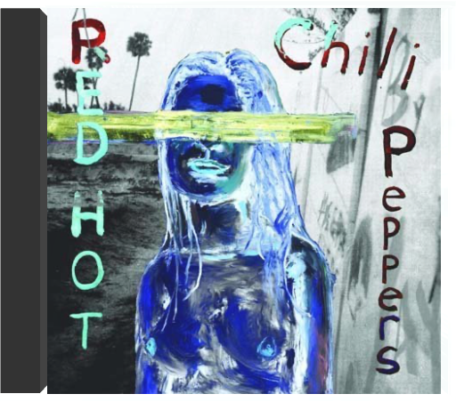
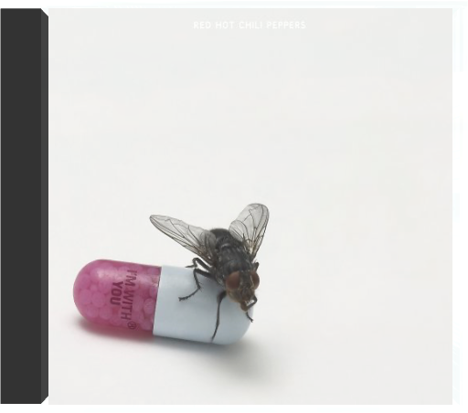
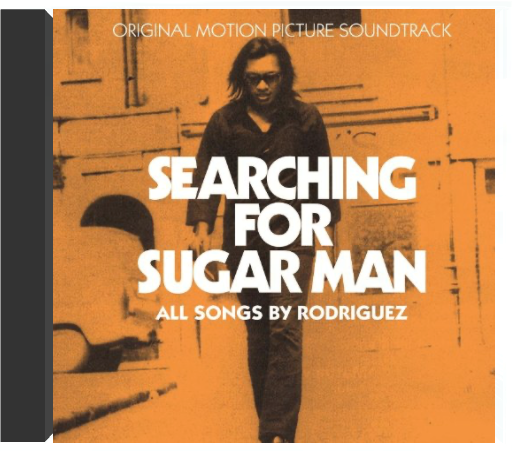

Moult tracasseries ont marqué l'histoire de ce groupe pionnier de la fusion, plus fin que Rage Against The Machine et, au départ, inspiré par le funk de Parliament et Funkadelic – George Clinton les a produits. Des histoires de drogue (le guitariste Hillel Slovak est décédé d'overdose), de multiples changements de personnel (Slovak remplacé par le génial John Frusciante remplacé par Dave Navarro, etc.) et des sautes d'humeur. 1991 marque un tournant dans leur carrière : ils signent un juteux contrat avec Warner, enregistrent l'épatant BloodSugarSexMagik et intègrent triomphalement la tournée Lollapalooza. C'est aussi la rencontre ave Rick Rubin, producteur du label de rap Def Jam, qui les aide à accoucher de One Hot Minute, disque gravé quatre ans plus tard, en pleine tourmente (le bassiste Flea déprime), juste après leur prestation au Festival Woodstock II. Ce disque est marqué par l'arrivée du guitariste Dave Navarro, ancien de Jane's Addiction, et par le travail de Rubin qui ancre plus encore l'ensemble dans le metal, avec quelques pauses en forme de ballades qui cartonnèrent dans les charts. Par exemple, "My Friends" qui reproduit la formule du miraculeux "Under The Bridge" sur BloodSugarSexMagik. Rien ne sera plus jamais comme avant, au point que certains fans préfèrent l'époque (la fin des années 80) plus surréaliste de Mother's Milk. —Hervé Comte  Dix ans auront donc été nécessaires aux Red Hot Chili Peppers pour résoudre l'un de leurs deux problèmes majeurs : décrocher le jackpot, soit plus de deux millions d'albums vendus aux Etats-Unis. En domptant enfin leur mixture de funk rock métallique, ces pois sauteurs californiens travaillent leur style, comprenant que l'énergie seule ne suffit pas à résoudre tout. Autre problème de taille lié au dossier Red Hot : le poste de guitariste. Mort d'une overdose en 88, Hillel Slovak avait pourtant fait de Freaky Styley (1985) une belle orgie funk dans la tradition Parliament/Funkadelic. Pour Blood Sugar Sex Magik, John Frusciante, hendrixien dans l'âme, love parfaitement les interventions de sa guitare autour de la basse de Flea. Désormais, le funk est brutal et concis ("Give It Away"), la mélodie tend vers une certaine pureté ("Under The Bridge"), le groove devient hargneux ("The Power Of Equality" ou " Suck My Kiss") et les reprises se transforment en cour de récré (le final acoustique du "They're Red Hot" de Robert Johnson repris autour d'un feu de camp). Dans un genre piégé (je slappe, tu sautes, il riffe, on groove), les Red Hot Chili Peppers utilisent sérieusement leur talent de musiciens et livrent là leurs premières grandes compositions. Un must. —Marc Zisman  Groupe emblématique du mouvement rock fusion, mélange détonnant de metal coloré par le rap et surtout le funk, les Red Hot Chili Peppers domptent toujours aussi joliment le groove plus de quinze ans après leur formation. En effet, Californication, septième album maison, est plus que fidèle à l'image du gang de Los Angeles. Le disque, produit par un pionnier du genre, Rick Rubin, renferme tous les ingrédients explosifs qui ont fait la gloire des Red Hot : basse enivrante, guitares déchirantes, énergie sans limite, etc. Au fil des années, le quartette s'affirme même comme une redoutable machine à mélodies. Surtout, Californication marque le grand retour au bercail de John Frusciante, "démissionné" après Blood Sugar Sex Magik pour abus de stupéfiants. Un come-back tonitruant où son jeu de guitare toujours aussi psychédélique survole cet album. Bref, Californication est le passionnant constat d'un groupe en pleine maîtrise de son art. —Philippe Robert  by the wayred hot chili peppers Durant les années 90, les Red Hot Chili Peppers, combo de pois sauteurs aux torses nus et tatoués, abusaient de mélodies épicées (certaines produites par George Clinton himself) et de prestations scéniques endiablées jusqu'au classique Californication, album concassant leur furie funk metal en ballades félines. Trois ans plus tard, les Californiens, chaperonnés par l'inestimable Rick Rubin (Beastie Boys, Rage Against The Machine...) déboulent avec By The Way. La tendance se confirme : avec l'abandon de Dave Navarro et le retour au bercail de John Frusciante, guitariste prodige repu de ses expériences solitaires folk lo-fi, les imprévisibles poivrons rouges dérivent dangereusement vers une pop très fédératrice. Une guitare cristalline et souvent acoustique brode sur des sonorités 60's (harmonies vocales et clochettes spectoriennes sur "Universally Speaking") ou des thèmes hispanisants ("Cabron"), accompagne une basse pachydermique ("Venice Queen") ou quelques violons ululants ("Midnight"). Désormais quadragénaires, Anthony Kiedis, Flea, Chad Smith et John Frusciante réussissent à faire imploser leur rab de testostérone dans un soft rock éclectique. Leur meilleur album ? —Sabrina Silamo  La sauce des Red Hot Chili Peppers ne peut laisser indifférent. Car, fortement épicée (âmes sensibles s'abstenir !), elle est à l'image de la multiplicité de leurs pétaradantes influences : la fusion aux accents metal de Living Colour et le mélange de punk et rap urbain des Beastie Boys (ce qui les rapproche de Rage Against The Machine), le funk échevelé de George Clinton de Funkadelic (qui produit leur second Freaky Styley où figurent les légendaires accompagnateurs de James Brown, Maceo Parker et Fred Wesley) sans oublier le rock quand même (ils reprennent "Subterranean Homesick Blues" de Dylan). Mother's Milk réalisé en 1989 est leur quatrième album marqué par l'arrivée du génial guitariste John Frusciante qui remplace Hillel Slovak décédé peu de temps avant d'une overdose. Certainement un de leurs meilleurs disques, Mother's Milk distille sans compter ce qui fait l'esprit du groupe qui culmine sur le tubesque "Taste The Pain" et l'incroyable reprise heavy soul de "Higher Ground" de Stevie Wonder. Décapant ! —Philippe Robert  C'est en 1984 que les Red Hot Chili Peppers publient ce premier manifeste de fusion, un genre qui n'a pas cessé de prospérer depuis. Red Hot Chili Peppers est un album détonant sur lequel ces Californiens jouent avec maestria aux apprentis sorciers en mélangeant metal, rap, funk et rock. Aussi délirants à la ville qu'à la scène, ces clowns bondissants s'appuient sur une rythmique sans faille dont Flea, l'un des meilleurs bassistes de sa génération, est le pilier infatigable. La marque de fabrique des Red Hot, c'est aussi une guitare distordue et virevoltante ainsi que la voix narquoise et le débit intarissable du chanteur Anthony Kiedis. Un coup d'essai qui s'apparente à un coup de maître. —Cyril Deluermoz |  I'm with youred hot chili peppers ATTENTION : Vendu sans boite ni jaquette ! CD Uniquement dans une pochette. C'est le plus important et ça vous permet d'avoir les disques moins chers. Envoie rapide et soigné.  RSD. Previously unreleased on vinyl. Limited and hand-numbered to 2,000 copies worldwide. Almost 10 years ago, Light in the Attic and DJ Supreme La Rock compiled the first ever set of vintage Pacific Northwest soul on Wheedle's Groove: Seattle's Finest in Funk & Soul 1965-75 (LITA 009) featuring such rare sides as "I Just Want to Be (Like Myself)" by legendary funk outfit Robbie Hill's Family Affair. Nearly a decade on, more unheard Seattle soul gems continue surfacing. This November 29th, Light in the Attic is honored to release, for the first time on vinyl, Gotta Get Back: The Unreleased L.A. Sessions from Robbie Hill's Family Affair. Originally recorded at RCA Studios in Los Angeles in January 1975 with Executive Producer Cuba Gooding Sr. and the Main Ingredient (the Family Affair were the Ingredient's backing band at the time), these five tracks remained lost until the recent discovery of the original multi-track masters. The tapes were carefully mixed by renowned engineer and producer Steve Fisk. To say it's a miracle that these tapes surfaced would be a massive understatement. Robbie named his band "Family Affair" for a reason - his band is his family and what you hear is proof that the blood really is thicker than the mud. What you're now holding in your hands is a pinnacle recording from a band that continues on to the present day, surviving in Seattle's Central District, carrying on a decades' long tradition.  searching for sugar manrodriguez 1 - Sugar man  L'Amérique selon les Stones, recréée dans une cave sur la Côte d'Azur ! L'exil, c'est un peu la vie des Rolling Stones au début des années soixante-dix. Ils ont fui l'Angleterre pour des raisons fiscales et le guitariste Keith Richards, héroïnomane de réputation internationale, a tout intérêt à éviter les douaniers chatouilleux. Qu'à cela ne tienne, ses acolytes viennent enregistrer chez lui à Villefranche. Et c'est là, isolés, soudés par les circonstances dans un studio souterrain improvisé que les Stones vont recréer une Amérique de rêve, celle de leurs idoles et de leurs racines musicales : gospel ("Shine A Light" avec l'orgue de Billy Preston, "Just Wanna See His Face"), country blues ("Black Angel"), boogie ("Rip This Joint", "Turd On The Run"), country'n'western ("Sweet Virginia"), soul ("Let It Loose") et puis le rock, tout simplement avec trois classiques de taille : "Happy", chanté par Richards, "All Down The Line" et "Tumbling Dice". Les Stones sont en très grande forme, ils swinguent comme jamais, Richards surtout qui grave, ici, quelques-uns de ses meilleurs riffs. Happés plus tard par la jet-set et usés par les drogues, ils enregistreront encore de grands disques, mais celui-ci est leur dernier vrai chef-d'oeuvre. —Hubert Deshouse |

Julien
Collection Total:
1 901 Items
1 901 Items
Last Updated:
Nov 1, 2021
Nov 1, 2021

 Made with Delicious Library
Made with Delicious Library